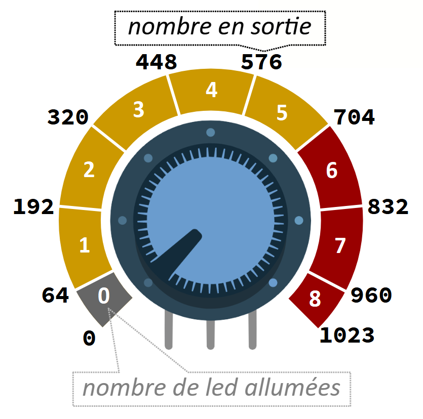
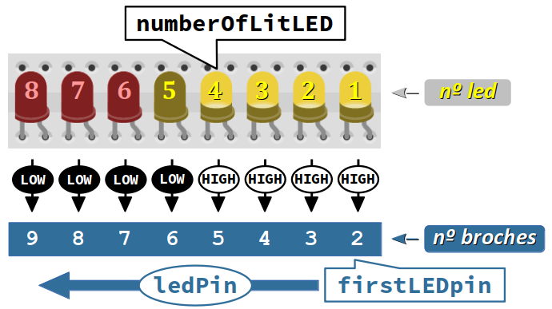
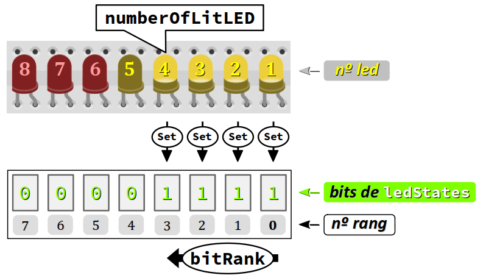
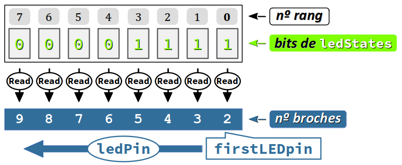

Objectifs pédagogiques
Les principaux objectifs de ce sujet de travaux pratiques sont :
- de manipuler des variables de types entiers et de type
byte, et de comprendre la différence d'emploi de ces deux types ; - de découvrir la pratique des entrées analogiques.
Les exercices sont aussi l'occasion de consolider les éléments de langage mis en œuvre aux TP précédents, en particulier les techniques de codage pour obtenir des programmes réactifs.
Pour traiter ce sujet de TP, il est recommandé d'avoir étudié les chapitres C3‑I ‑II ‑III ‑VI & ‑VII. Des renvois aux principaux éléments de cours requis sont indiqués au fur et à mesure des questions.
Mise en situation
Spécifications matérielles générales
Les deux exercices sont à traiter dans l'environnement de simulation en ligne Tinkercad , en implémentant préalablement le montage électronique en figure ci‑contre, qui comprend :
- une carte Arduino Uno ;
- une platine d'essai (breadboard) de taille moyenne, dont les rails « + » et « − » sont respectivement reliés aux broches 5V et GND de la carte ;
- une série de 8 led (en partant de la droite, 5 jaunes puis 3 rouges) telles que :
- les anodes sont respectivement reliées aux broches nº 2 à 9 du port numérique de la carte ; ces broches doivent donc être configurées dans les programmes comme des sorties ;
- les cathodes sont reliées au rail « − » de la platine, chacune via une résistance de limitation de courant de 220 Ω ;
- un potentiomètre (résistance variable) W à bouton tournant, de résistance totale 10 kΩ, alimenté en tension par les rails « + » et « − » de la platine, et dont le curseur (contact mobile) est relié directement à l'entrée analogique nº A0 de la carte.
Spécifications logicielles générales
L'exercice 1 consiste à allumer de droite à gauche, en temps réel un nombre de led proportionnel à la position du bouton tournant du potentiomètre, pour simuler un bargraphe W.
L'exercice 2 reprend la spécification de l'exercice 1 en ajoutant la persistance temporaire de la dernière led rouge allumée la plus à gauche pour signaler tout pic de tension « élevée » sur la broche du curseur du potentiomètre.
Travail demandé
Il est recommandé de traiter les exercices dans l'ordre.
Dans un nouveau circuit sous Tinkercad :
- effectuer le câblage de la partie matérielle ;
- vérifier le câblage par des branchements directs temporaires, typiquement en reliant l'anode de chaque led au potentiel de référence 5V de la carte.
Sur le poste de travail, créer un répertoire de TP nommé avec la référence du sujet, typiquement C3_TP1.
Puis, avec un éditeur de code (Sublime Text, Atom…) :
- Coder les programmes demandés en respectant les règles de bonnes pratiques (cf. chap. C2‑IX ).
- Enregistrer le programme de chaque exercice dans un fichier distinct nommé
Ctp31_exn.ino, où n est le nº de l'exercice.
Pour tester le bon fonctionnement de chaque programme, procéder par copier‑coller dans la fenêtre d'édition de Tinkercad. En cas de modifications ponctuelles de mise au point, ne pas oublier d'effectuer un copier‑coller inverse dans l'éditeur de code et d'enregistrer les modifications.
Répondre aux questions supplémentaires sur feuille ou cahier.
Consignes de codage
Déclarer les constantes globales de type int8_t :
-
firstLEDpinetlastLEDpinpour désigner les numéros de broches respectifs de la première led et de la dernière led du bargraphe ; -
numberOfLEDpour mémoriser le nombre de led du bargraphe (en utilisant les identificateurs des constantes précédentes) ; -
potentiometerPinpour désigner le numéro de broche du potentiomètre.
Coder la fonction setup pour configurer et initialiser toutes les sorties utilisées du port numérique de la carte.
- Implémenter dans la fonction
loople programme temps‑réel d'animation du bargraphe en suivant l'algorithme en quatre étapes décrit ci‑dessous :
- Lire la valeur analogique sur la broche reliée au curseur du potentiomètre (cf. chap. C3‑VII ) et la mémoriser dans une variable entière nommée
potentiometerValue, en choisissant le type plus approprié. - 
Calculer et mémoriser le nombre de led à allumer sur le bargraphe dans une variable entière nommée
numberOfLitLED, en choisissant le type plus approprié. Dans un premier temps, on pourra utiliser la fonctionmap(cf. chap. C2‑VII ). - 
Dans une version
v1du programme, à l'aide d'une boucleforavec une variable d'itérationledPinparcourant tous les numéros de broches, allumer ou éteindre les led en tenant compte de la valeur denumberOfLitLED. Dans cette boucle, on codera la condition à exprimer surledPinpour déterminer s'il faut la mettre au niveau logique HAUT ou BAS en raisonnant sur la figure ci‑contre (on peut notamment déterminer le décalage pour la première led par rapport à la valeur de son numéro de broche). - Dans une version
v2du programme : - déclarer variable d'état
ledStatesde typebyteet de valeur initiale0b00000000(cf. chap. C3‑III ). On va faire en sorte que chacun de ses bits encode par0ou1la valeur logique de l'état d'une led du bargraphe, selon qu'elle doit être respectivement éteinte ou allumée. -
À l'aide d'une boucle
foravec une variable d'itérationbitRankparcourant les bits deledStates, et en utilisant la fonctionbitSet(cf. chap. C3‑III ), mettre à1tous les bits de rang strictement inférieur à la valeur denumberOfLitLED. - À l'aide d'une boucle
foravec une variable d'itérationledPinparcourant tous les numéros de broches, allumer ou éteindre les led en codant dans le deuxième argument de la fonctiondigitalWritela valeur du bit deledStatescorrespondant à la valeur deledPin, et lue grâce à la fonctionbitRead(cf. chap. C3‑III ).
* Dans un deuxième temps, on cherchera une alternative à la fonctionmap, afin d'obtenir une meilleure répartition sur la course du potentiomètre pour l'allumage successif des led, spécifiée en figure ci‑contre par les valeurs seuils de la variablepotentiometerValue(cf. l'exercice 5 de la feuille C3 ).* Remarque : Avec la fonction mathématiquepow(cf. chap. C2‑IV ), on peut calculer directement la valeur deledStatesen fonction de celle denumberOfLitLED. On peut alors se passer de la boucleforsupra. - Lire la valeur analogique sur la broche reliée au curseur du potentiomètre (cf. chap. C3‑VII ) et la mémoriser dans une variable entière nommée
- * Modifier le programme de l'exercice précédent pour qu'il affiche les pics de tension élevée, c'est‑à‑dire que si une ou plusieurs led rouges s'allument, celle de plus haut rang reste allumée durant au moins une seconde même si, entre‑temps, le niveau de tension sur le curseur du potentiomètre diminue (cf. l'image ci‑contre et la vidéo de fonctionnement d'un égaliseur Hi‑Fi au lien suivant Y).
- créer une variable entière nommée
maxNumberOfLitLEDpour mémoriser à tout instant le nombre maximal de led qui ont été allumées depuis le dernier pic de tension ; - utiliser une variable nommée
previousMillispour mémoriser la valeur rendue par la fonctionmillislors du dernier pic de tension et une constante nomméepersistenceDuration(à déclarer de type entier non signé) qui définit en millisecondes la durée de persistance d'allumage de la led rouge allumée de plus haut rang ; - modifier la valeur de
maxNumberOfLitLEDseulement si la variablenumberOfLitLEDprend une valeur supérieure ou égale au numéro de la première led rouge et supérieure à la dernière valeur demaxNumberOfLitLED…